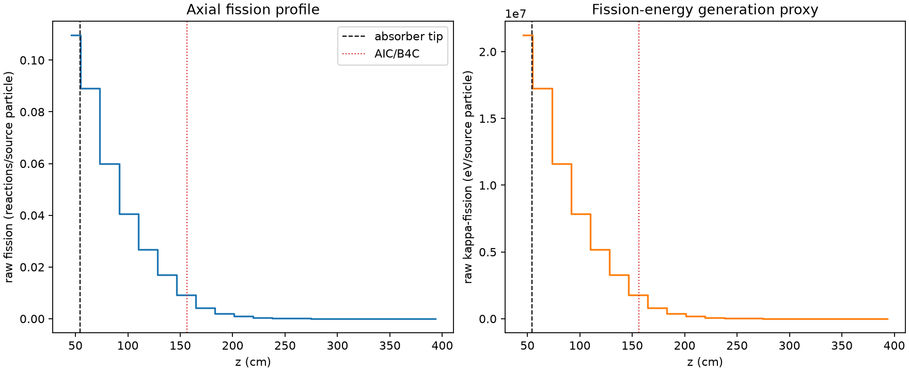
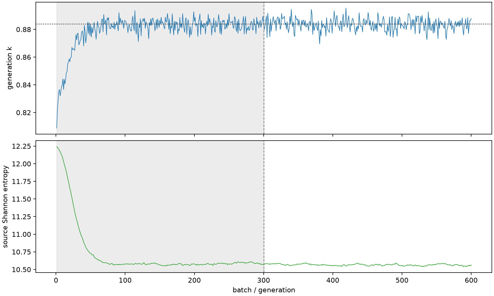

| field | value |
|---|---|
| experiment | V2-ADAPTIVE_01-0005 |
| k | 0.8838342949572745 |
| MC standard error | 0.00019776070159471565 |
| seconds | 944.6823259019875 |
| acceptance | not_assessed |
| convergence | review_required |
Completed is output integrity only; physical and statistical review required. Zero tallies do not prove zero production or zero uncertainty.
| diagnostic | value |
|---|---|
| geometric fuel voxels | 5280 |
| zero fission tally voxels | 90 |
| low signal fuel voxels | 1798 |
| low signal fission share | 0.0002204415601844613 |
| low signal kappa share | 0.0002204838063496911 |
| important fission share | 0.950129980344415 |
| previous filter included | 3482 |
| duration estimate s | 1562.5173488400023 |
| actual minus estimate s | -617.8350229380148 |
| fission relative MC error | statistics |
|---|---|
| all_geometric_fuel | {"voxels": 5280, "positive_mean_voxels": 5190, "zero_mean_voxels": 90, "undefined_relative_error_voxels": 90, "median": 0.05670123830352872, "p95": 0.8873368906936165, "maximum": 1.0000000000000002} |
| low_signal | {"voxels": 1798, "positive_mean_voxels": 1708, "zero_mean_voxels": 90, "undefined_relative_error_voxels": 90, "median": 0.5402615935105575, "p95": 1.0, "maximum": 1.0000000000000002} |
| important_95pct | {"voxels": 1567, "positive_mean_voxels": 1567, "zero_mean_voxels": 0, "undefined_relative_error_voxels": 0, "median": 0.0071315117254932454, "p95": 0.012716261562549541, "maximum": 0.01402480988731963} |
| outside_previous_filter | {"voxels": 1798, "positive_mean_voxels": 1708, "zero_mean_voxels": 90, "undefined_relative_error_voxels": 90, "median": 0.5402615935105575, "p95": 1.0, "maximum": 1.0000000000000002} |
| kappa_fission relative MC error | statistics |
|---|---|
| all_geometric_fuel | {"voxels": 5280, "positive_mean_voxels": 5190, "zero_mean_voxels": 90, "undefined_relative_error_voxels": 90, "median": 0.05660191480826311, "p95": 0.8878835434896076, "maximum": 1.0000000000000002} |
| low_signal | {"voxels": 1798, "positive_mean_voxels": 1708, "zero_mean_voxels": 90, "undefined_relative_error_voxels": 90, "median": 0.5389407396868962, "p95": 1.0, "maximum": 1.0000000000000002} |
| important_95pct | {"voxels": 1567, "positive_mean_voxels": 1567, "zero_mean_voxels": 0, "undefined_relative_error_voxels": 0, "median": 0.007117497726348986, "p95": 0.012697798716131158, "maximum": 0.014000414924348488} |
| outside_previous_filter | {"voxels": 1798, "positive_mean_voxels": 1708, "zero_mean_voxels": 90, "undefined_relative_error_voxels": 90, "median": 0.5389407396868962, "p95": 1.0, "maximum": 1.0000000000000002} |
| axial bin | fission share | kappa-fission share |
|---|---|---|
| 1 | 0.30444735807322887 | 0.30439313968164194 |
| 2 | 0.24735607989643751 | 0.2473721076593077 |
| 3 | 0.16663491627169102 | 0.16664796852141647 |
| 4 | 0.11278923020138812 | 0.11279780003848691 |
| 5 | 0.07448828700225527 | 0.07449419373895004 |
| 6 | 0.046890738632494745 | 0.046894317489291584 |
| 7 | 0.02537882324958761 | 0.02538166143980905 |
| 8 | 0.011682637223057867 | 0.011684860269350965 |
| 9 | 0.0055164417862808264 | 0.005517563043778768 |
| 10 | 0.0025374412604209882 | 0.0025379038783694603 |
| 11 | 0.001197136570122595 | 0.0011973664475037995 |
| 12 | 0.0005748031965215715 | 0.0005748988496634819 |
| 13 | 0.0002628989255388871 | 0.0002629652298030564 |
| 14 | 0.00013315215899836513 | 0.00013317438817124608 |
| 15 | 6.590813513933227e-05 | 6.592318628049624e-05 |
| 16 | 2.284958470776035e-05 | 2.2857243229196503e-05 |
| 17 | 1.1477710174607481e-05 | 1.147838538349727e-05 |
| 18 | 5.2538823492582765e-06 | 5.255179459715585e-06 |
| 19 | 2.9490776524102393e-06 | 2.948971429946969e-06 |
| 20 | 1.6171619525458642e-06 | 1.616358672603588e-06 |
Histories include the inactive-to-active transition at batch 300. kappa-fission approximates fission energy production, not total heat deposition.

